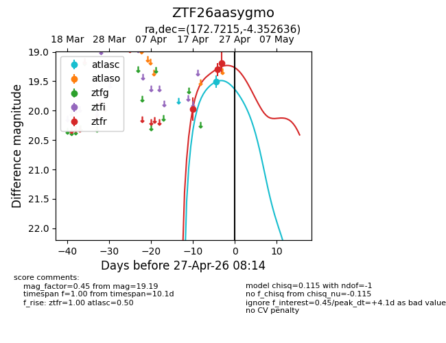
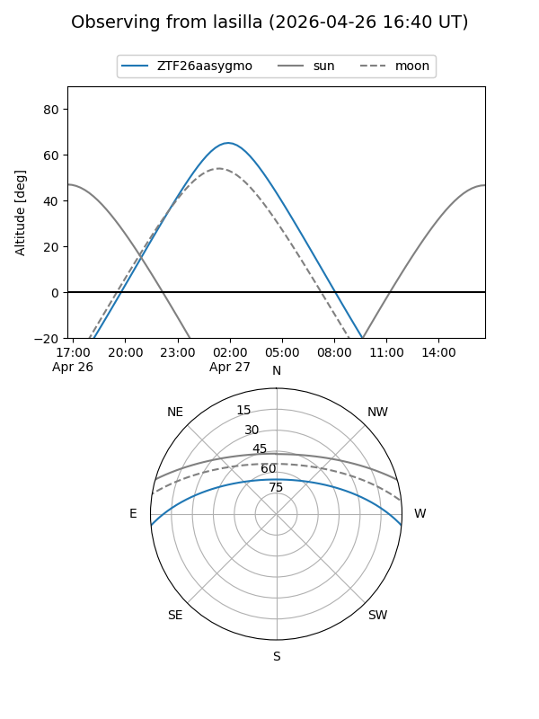
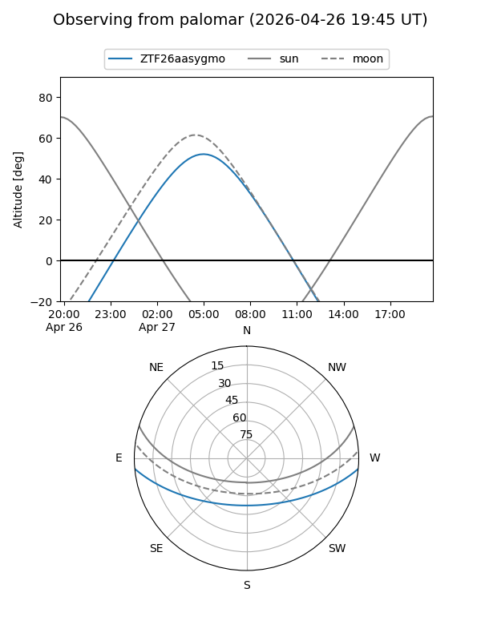
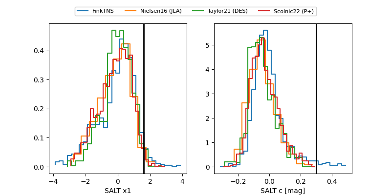

ZTF26aasygmo
Target ZTF26aasygmo at 2026-04-27 08:15
Aliases and brokers:
FINK: link
Lasair: link
ALeRCE: link
alt names
ZTF26aasygmo (ztf,fink_ztf)
Coordinates:
equatorial (ra, dec) = 172.7215,-4.35264
equatorial (HMS+DMS) = 11:30:53.17,-04:21:09.49
galactic (l, b) = (268.1586,+52.99312)
Flags:
Photometry:
last atlasc=19.51, ztfr=19.19
1 atlasc, 3 ztfr detections
Lightcurve

Visibility


Additional plots
